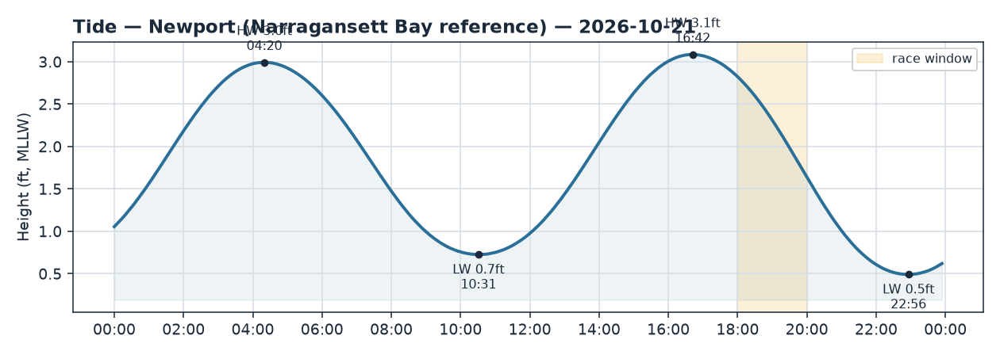
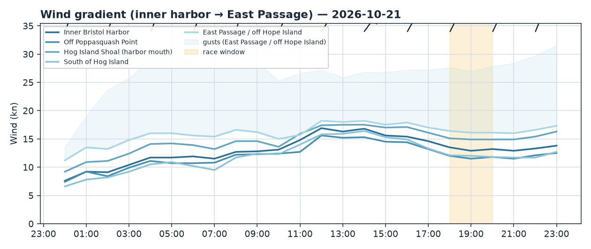
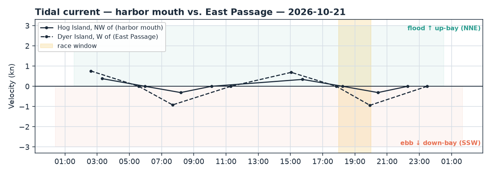

Bristol Harbor · Rhode Island
Wed 21 Oct 2026 · 18:00–20:00
Shifty NNE gradient breeze 13–16 kt gusting high-20s and building; harbor mouth goes slack ~18:15 then ebbs SSW while the East Passage already ebbs hard — falling tide off the 16:42 high.
Wind
A NNE gradient northerly (~025–027°, essentially steady — the 2° "veer" is noise), blowing off the Bristol/Poppasquash land to the N. Expect it shifty and puffy with real teeth in the gusts: race-window average 13–16 kt with gusts to ~27 kt, and NWS has it building after dark toward N 20–25. The models are tight inside the harbor (spread ≲1 kt, HRRR/ECMWF/GFS all ~12–13 kt) and only split on the seaward end (East Passage spread 3.2 kt, HRRR 16 vs ECMWF 13) — so treat the outer strength as "firm but low-confidence," the inshore numbers as solid.
Fix gradient: more pressure to the N and seaward — Hog Island Shoal at the mouth (~15 kt) and the East Passage (~16 kt) run 3–4 kt stronger than the inner harbor (~13 kt). The soft spot is off Poppasquash Point (~12 kt), sitting in the lee the west shore throws to its E/SE under a northerly. Live obs back the regime: Conimicut Light up-bay is already 19–20 kt NNE, Newport at the Passage mouth 14–16 kt NNE, and the obs-vs-model check agrees (ratio 0.92). Being a gradient breeze, this is a stay-in-phase day — the oscillations pay more than committing to a side.
Current
Transition window. At the harbor mouth (Hog Island NW) the weak afternoon flood dies to slack at 18:14, then a light ebb builds toward ~0.3 kt by 20:26, setting SSW (~199°, down-bay/seaward). So the first ~15 minutes carry a dribble of flood, then it's slack, then a building seaward ebb for the back half.
The East Passage (Dyer Island) is already further into its cycle: slack at 17:51, then ebb building to nearly 1 kt (0.94 kt, SSW ~216°) by 19:56 — materially stronger than the harbor-mouth flow, right through the channel axis.
Tide
Falling all window off the 16:42 high (3.1 ft) toward the 22:56 low (0.5 ft) — roughly 2.5 ft dropping to ~2 ft by 20:00. Low water doesn't arrive until well after the finish, so no hard shallow-mark alarm, but keep the falling trend in mind for any skinny harbor-edge marks or committee-boat depth late in the race.
Tactical call
Course-agnostic: The breeze is a NNE gradient northerly — shifty and puffy — so the headline play is staying in phase with the oscillations rather than banking one shore. Pressure lives to the N and seaward (Hog Island Shoal, East Passage); the dead patch is the Poppasquash Point lee (E/SE of the west shore) — avoid parking there. On current, the second half of the window brings a building SSW ebb: it's a helper heading S/seaward (down-bay) and a brake heading N/up-bay. In the East Passage the ebb is strong (~1 kt through the channel) — when a leg takes you N, work the shallower shore edges out of the mid-channel SSW set; heading S, ride it. Dress warm (low 50s, dusk) and respect the gusts — this is a build, not an ease.
If the course is set: - N–S windward/leeward — beats run into the NNE; the E–W pressure gradient is your cross-course lever (seaward/E edge carries the extra 3–4 kt). Second-half ebb pushes you off the windward mark on the way up — layline late. - J-hook out of the harbor — start in near-slack inner harbor, then the hook out to the mouth drops you into the building ebb; expect the favored edge to flip as you clear into the stronger seaward pressure and SSW set. - Around Hog Island — current reverses leg-by-leg: near-slack/weak ebb at the NW mouth, firmer SSW ebb down the Passage side. Give each leg its own call; the shore edges beat the channel when you're pointed up-bay. - Out-and-back (light air) — not the day's character (it's breezy), but if used, the N/seaward pressure dominates: get out toward Hog mouth / East Passage for the extra knots and let the ebb sling you back down-bay.
Data gap: NDBC 44097 (Block Island) returned no wind this cycle — offshore context is inferred from the NNE gradient and the Newport/Conimicut anemometers.
Visuals: briefs/2026-10-21_tide.png, briefs/2026-10-21_wind.png, briefs/2026-10-21_current.png.


